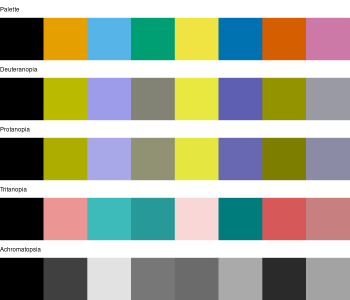
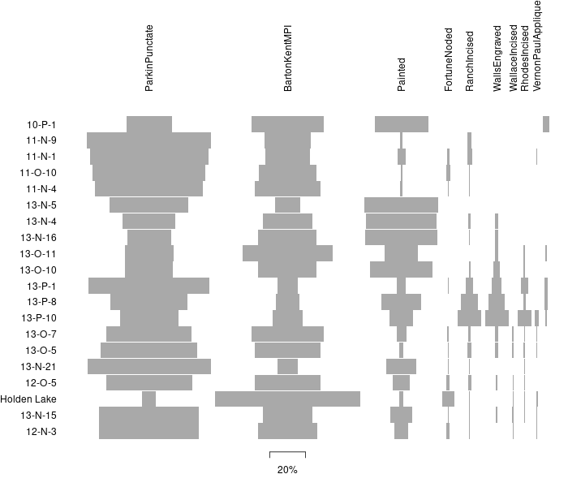
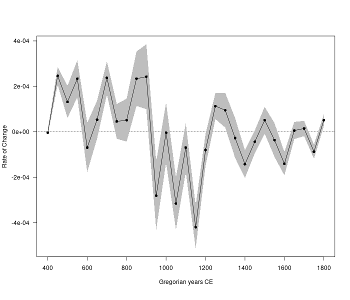
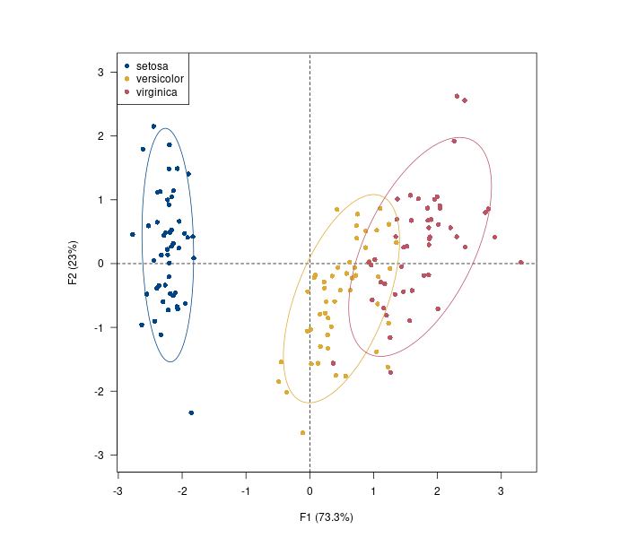
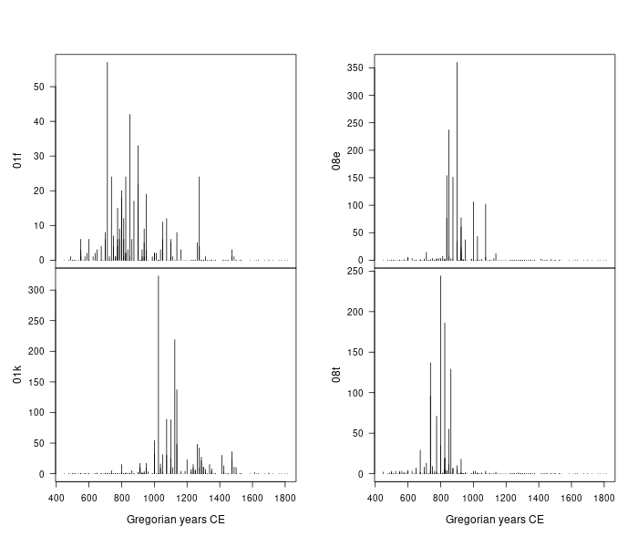
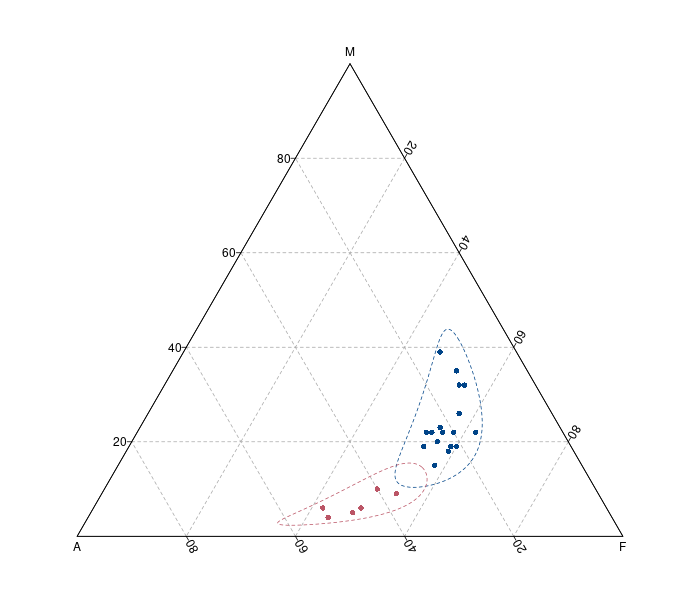
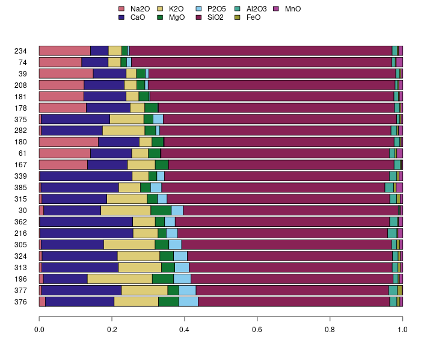
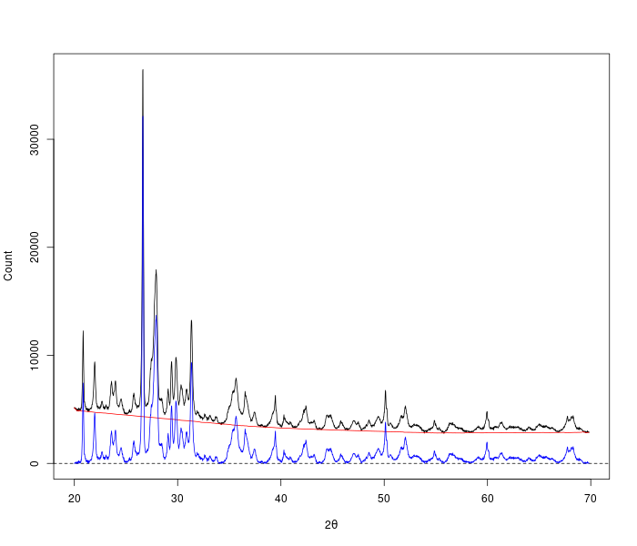
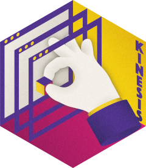

R packages of the tesselle projet

color schemes for use with 'graphics' or 'ggplot2'. It provides tools to simulate color-blindness and to test how well the colors of any palette are identifiable. Several scientific thematic schemes (geologic timescale, land cover, FAO soils, etc.) are also implemented." class="card-img-top rounded-top">khroma
Colour Schemes for Scientific Data Visualization

tabula
Analysis and Visualization of Archaeological Count Data

kairos
Analysis of Chronological Patterns from Archaeological Count Data

folio
Datasets for Teaching Archaeology and Paleontology

dimensio
Multivariate Data Analysis

. This packages offers a simple API that can be used by other specialized packages." class="card-img-top rounded-top">aion
Archaeological Time Series

arkhe
Tools for Cleaning Rectangular Data

isopleuros
Ternary Plots
![Easy install and load key packages from the 'tesselle'
suite in a single step. The 'tesselle' suite is a collection of
packages for research and teaching in archaeology. These
packages focus on quantitative analysis methods developed for
archaeology. The 'tesselle' packages are designed to work
seamlessly together and to complement general-purpose and other
specialized statistical packages. These packages can be used to
explore and analyze common data types in archaeology: count
data, compositional data and chronological data. Learn more
about 'tesselle' at <https://www.tesselle.org>.](./images/tesselle.png)
tesselle
Easily Install and Load 'tesselle' Packages

nexus
Sourcing Archaeological Materials by Chemical Composition

, Rolling Ball algorithm after Kneen and Annegarn (1996)alkahest
Pre-Processing XY Data from Experimental Methods
ananke
Quantitative Chronology in Archaeology

kinesis
'Shiny' Applications for the 'tesselle' Packages
No matching items